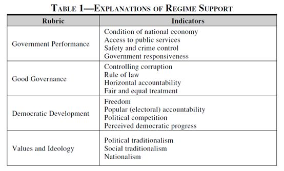
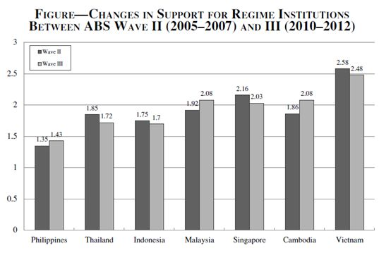
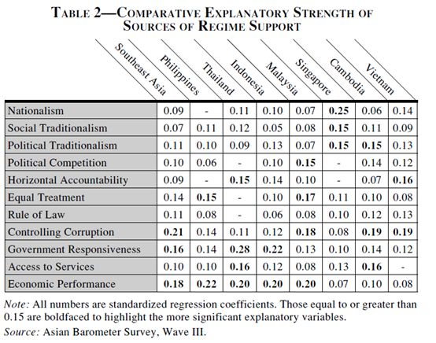

收录于合集
#政治态度 13 个
#比较政治学 121 个
文献来源：
Alex Chang, Yun-han Chu and Bridget Welsh , “Southeast Asia: Sources of Regime Support,” Journal of Democracy , Vol.24, No.2(2013), pp.150-164.
作者简介：
**
**
左起分别为：张传贤、朱云汉、Bridget Welsh
**
**
张传贤（ Alex Chang），台北“中央研究院”政治学研究所副研究员，研究兴趣为形式理论、方法论、政党系统与选举制度以及国会制度。
朱云汉（Yun-han Chu），台北“中央研究院”院士、政治学研究所特聘研究员和台湾大学政治学系教授，研究兴趣为政治学方法论、国际政治经济学、东亚政治经济以及民主化。
Bridget Welsh，意大利约翰·卡博特大学政治学副教授，研究兴趣为东南亚政治，特别关注马来西亚、缅甸、新加坡和印度尼西亚等国。
理解政治合法性是认识现代政治生活的核心。为了生存与良好地运转，所有现代政体都必须遵循民众的意愿并赢得他们的支持。正如Bruce Gilley所言，缺乏合法性的制度必须仰仗更多地资源来维持统治，这将导致治理效率的低下，而丧失民众的支持将使得政权更容易被推翻或者崩解。因此，不仅仅是民主政体，任何类型的政权都希望赢得人们的支持，特别对完成民主转型的政权来说。
经典的规范政治理论认为与威权政体相比，民主政体享有更广泛的政体合法性因为民主政府建立在被统治者同意和普遍选举的基础之上。然而调查数据显示不同民主政体下的民众对政体的普遍性支持差异很大，而且非民主政体中民众的政治支持有时比形成中的民主政府高得多。由此，对调查数据展现出的困惑产生出了两种解释路径。
第一种解释路径认为，政体合法性是被创制出来的，与政治体系的输入相比，它更仰赖政治体系的输出端。比如如果非民主政体可以为民众提供经济福利和善治的话，那么它依然可以拥有政体合法性。同理，民主问责制和代议制民主并不必然保证民主能避免经济停滞和导致恶治。
第二种解释路径指出，政体合法性不仅仅来源于政治体系的绩效，也来源于民众的政治倾向。相比非民主政体，民主政体下成长出的“批判性公民”导致其对制度的运作更加不满从而表现出更低的政治信任，但是非民主政权也可以因为满足两大条件享有更高的支持。首先，通过强化对媒体和政治空间的有效管控；其次，威权政府对民众的空间并非完全否定、尊重并表现出容忍。就这层意义而言，政治文化发挥了重要作用。
作者指出，东南亚地区有不同的政体为分析提供了条件，因此作者接下来将严格遵循实证研究方法检验了这两种分析路径，得出以下几点结论：其一是竞争性选举和制度没有起到为转型中的民主政体提供政治合法性的作用；其二是这些政权政治合法性至少要求政府的治理质量特别是改善物质生活的作为。其三是相比于经济绩效，东南亚的这些威权政体的合法性更有赖于民众对政府回应性、惩治腐败以及促进社会公正。进一步而言，意识形态与政治文化也是非民主政体合法性的重要来源。
在过去20年间，东南亚地区只有菲律宾和泰国两国完成了民主转型。在上世纪90年代中期，绝大部分国家还是由非民主政权统治。印度尼西亚在1997年亚洲金融风暴爆发之后的第2年走上了民主转型之路，尽管马来西亚和新加坡的威权政府在这场金融风暴中展现了强大的韧性，但也开启了一些改革。越南在中国的影响下也进行革新开放。泰国和菲律宾分别在2010年和2011年举行了自由和公正的选举。马来西亚和新加坡也分别在2008年和2011年举行了更具有竞争性的选举。由此，威权政体正面临着越来越多的内在挑战，似乎再一次面临退潮。但是与此同时，威权力量在一些国家内部也得以巩固，比如越南和马来西亚。
因此，为了检视柬埔寨、印度尼西亚、马来西亚、菲律宾、新加坡、泰国和越南这7个东南亚国家政体合法性的影响因素，作者分别采用亚洲民主动态调查第2波和第3波数据进行检视。
作者首先建立起总体分析框架用于测量上述七国政体合法性的影响因素，分别是表1中的政府绩效、善治、民主发展、价值观和意识形态，随后作者分别阐述了选取这些测量指标的理论依据。

作者选取的因变量是政治支持，包括对制度（政府、国会、法院、军队等机构）的支持（信任）以及普遍性支持（在ABS的问卷中通过三道问题进行测量）。

作者以0-3表示信任量表，在表1中展示了根据最近两波数据的统计结果，除了菲律宾以外，东南亚的其他国家的政治信任均值都在1.5以上，拥有较高的政治信任。其中，一党执政的越南的政治信任得分最高，新加坡、马来西亚和柬埔寨比完全实施西式民主的菲律宾、泰国还有印度尼西亚都要高。

表2显示了普遍性支持与特定性支持拥有近似的来源。在表11所列的15项指标当中，有11项指标是显著的，它们关乎价值与意识形态、善治与政府绩效三方面。首先，这些指标对其政治支持都是正向影响。其次，11项指标中的大部分指标不仅在区域层面是显著的在国家层面也是显著的。对印尼、马来西亚和柬埔寨而言，所有指标都在0.05的水平保持显著。而在菲律宾和越南，有10项指标是显著的。在新加坡和泰国则分别有9项和8项显著。
除了新加坡之外，以国家经济发展、政府回应性以及公共服务组成的政府绩效是东南亚国家政体合法性的最重要来源。此外，善治层级下的主要指标也显著地影响了民众的政治支持特别是当局能否尽力惩治腐败惩治以及对民众能否收到政府的公正对待。而意识形态和价值观下属的三项测量指标——民族主义、社会传统主义以及政治传统主义的解释力远逊于绩效和善治这两层因素。
作者最后强调政治合法性不单于在选举——政治系统的输入层面，更在于政治系统的输出层面即民众对政府绩效的期待。 但是对东南亚诸国而言，单纯强调经济满意度并不够，民众更注重政府在控制腐败、力行法治以及保证公民受到平等公正对待、改善公共服务以及对民众需求回应等方面是否因应有为。当然，文章的分析也认为政体类型与合法性来源有密切关系。对一党执政国家和霸权威权政体而言，民族主义和传统价值观依然持续产生支持的效应。作者还指出，尽管这些年来民主在不断发展，但是对东南亚的国家而言，只有公开和公平的政治竞争关系到政体合法性的水平，其余诸如民众对自由、问责以及民主进步的感知几乎不起到作用。
编后记：
近年来，随着“一带一路”倡议的推动，东南亚日益成为我国学界关注的焦点。事实上，东南亚地区政体类型多元、族群构成复杂，是比较政治学研究中的重点关切。因此，无论是转型后建立的新兴民主政权，还是具有韧性的典型威权国家，以政治信任为切入点的研究都具有重要的意义（我们姑且认为被《民主杂志》关切的议题都是重要的），尽管赵鼎新教授曾经撰文（见赵鼎新：《合法性的政治——当代中国的国家与社会关系》，台大出版中心2017年版，第20页）批判过从数据角度出发研究合法性会陷入“经验主义谬误”。当然，赵鼎新教授重新划分了合法性的三种类型——绩效合法性、程序合法性以及意识形态合法性，强调单纯建立在绩效基础上的政治合法性是高度不稳定的，需要程序合法性和意识形态合法性的支持，而这篇文章则更强调了民众对绩效合法性的重视。可见各国政权在合法性来源上有所差异。
此外，就方法而言，小编在学习这篇文章之后也有一定的疑惑，作者所用的数据是关于政治态度调查的主观数据，因此可能会受到“主观对主观”的质疑——解释变量（因变量）之间可能会存在共线性，而自变量和因变量之间也可能存在内生性的问题，在此作者并没有报告VIF值，也没有采取工具变量或者分层模型等其他方法解决。当然，也有学者发文指出民意调查数据中使用主观变量的好处，因此这可能是一个仁者见仁智者见智的问题。
最后，我们需要明确政治信任与政治支持、政治合法性三者虽然有紧密联系，但是也有区别。推荐读者朋友去查阅唐文方教授的近著Populist Authoritarianism: Chinese Political Culture and Regime Sustainability（牛津大学出版社2016年版），他在该著的第五章（第74-75页）做了最为经典的回答。


政观
感谢您支持学术公益
微信扫一扫赞赏作者 __赞赏
已喜欢，对作者说句悄悄话
取消 __
发送给作者
发送
最多40字，当前共字
上一页 1/3 下一页
长按二维码向我转账
感谢您支持学术公益
受苹果公司新规定影响，微信 iOS 版的赞赏功能被关闭，可通过二维码转账支持公众号。